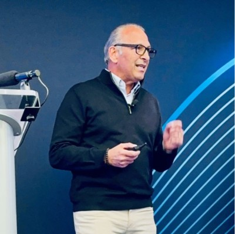

Could one small improvement add $1,000,000 to your pipeline?
Give SIP a name and a company. In about two minutes you get a prepared, personalized playbook for the first call: who they are, what they care about right now, and what to say first.
A name and a company in. A prepared, personalized playbook for the first call out, in about two minutes.
Waitlist members get a free trial at launch. No card required.
The CRM keeps score. Navigator finds the prospect. Nobody helps a seller walk in prepared enough to earn a second conversation. Generic preparation makes generic meetings, and generic meetings rarely get a second one.
The CRM keeps score. Navigator finds the prospect. Nobody helps a seller walk in prepared enough to earn a second one.
75 conversations end after one call. Illustrative.
Separate agents research the company, the buyer's intent, the decision maker, and what to do about it. Then they check each other's work and assemble one briefing.
Separate agents research the company, the buyer, and what to do about it, then assemble one briefing.
Nobody buys a report. You're buying more second meetings and more deal flow. Here's how SIP delivers it, in three parts.
The intelligence report on the prospect and the company: who they are, what they're dealing with right now, what they've said publicly, every claim confidence rated.
Ten selling strategies ranked for this buyer and this account. What to lead with, what to ask, what to avoid. Tailored, not templated.
The interactive layer: rehearse the conversation against a model of the buyer, pressure-test your approach, and walk in with the live battle card. Rolling out through the beta.
How SIP collects signals, analyzes them, and packages what your sellers actually use.
Company signal, buyer intent, decision-maker profile, and recommended actions are researched by separate agents and assembled into a single document. A rep reads one page instead of six tabs.
SIP follows the same cycle intelligence analysts use: gather from many sources, weigh reliability, check assumptions, prioritize what matters, and deliver it in a form the seller can act on immediately. Every finding carries a confidence rating so the rep knows what is verified and what is inferred.
The briefing shows the buyer profile, the research behind it, ten selling strategies ranked by fit, and a live battle card for the meeting itself. More tools open up through the beta.
Adapted from the intelligence cycle and published analytic tradecraft: define what you need to know, collect, analyze, check your assumptions, and deliver something the seller can act on.
Discovery questions, objection handling, and mutual action plans from enterprise sales leaders, applied to each prospect automatically.
Separate research, analysis, and recommendation agents review each other's work before anything reaches the briefing. Every claim carries a confidence rating.
| Without SIP | With SIP | |
|---|---|---|
| Research time | Hours, if it happens | About two minutes |
| Sources | Scattered across tabs and notes | One briefing, confidence rated |
| Talking points | Generic deck, generic questions | Ten strategies ranked for this buyer |
| Consistency across reps | Depends on the rep | Same standard every time |
| Second-meeting rate | Around 25% | Our target: 50% and up |

Frank Casale, founder"I wanted something that created less work for a sales team, not more, and paid for itself inside the quarter. I couldn't find it. So we built it."
Frank Casale, Founder. Thirty years as a salesperson, sales manager, and selling founder.
Before buying more leads, see what happens when your team converts more of the meetings it already earns. Use your own numbers.
SIP is in private beta with a small group of sales leaders. The waitlist gets in next.
A sales intelligence and personalization platform. You give it a prospect, it gives you a prepared, personalized playbook for the conversation: research, recommendations, and a live battle card.
About two minutes from a name and company.
Sales leaders, account executives, and founders who sell, especially teams where the first meeting is the hard part.
No. The CRM keeps score. SIP is the layer that helps you score. Keep what you have.
Private beta is running now. Join the waitlist and you'll hear from us when public access opens.